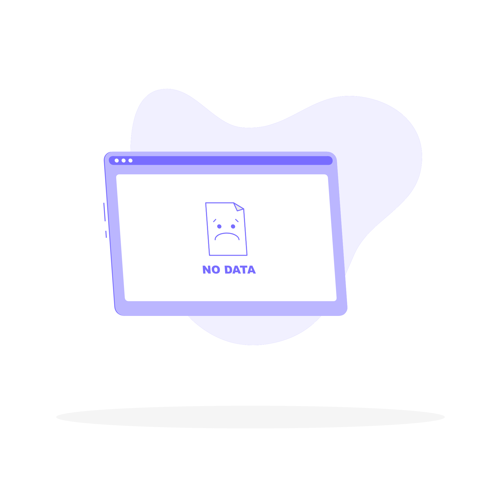

<ion-header class="ion-no-border header" [translucent]="true">
  <ion-toolbar class="toolbar">
    <ion-title class="titulo">Lecturas de Medidores</ion-title>
  </ion-toolbar>
  
</ion-header>  


<ion-content [fullscreen]="true">

  <ion-segment mode="ios" [(ngModel)]="segment">
    
    <ion-segment-button value="pendientes">
      Pendientes
    </ion-segment-button>
    <ion-segment-button value="finalizados">
      Finalizados
    </ion-segment-button>

  </ion-segment>

  <ion-spinner color="primary" class="page-loader" *ngIf="loading" name="crescent"></ion-spinner>
  <div *ngIf="!loading" [ngSwitch]="segment">
    <div *ngSwitchCase="'pendientes'">

      <div *ngIf="reportesPE.length===0">
        
      </div>

      <ion-card *ngFor="let r of reportesPE, let i = index">  
        <div>
          <ion-card-header>
            <ion-toolbar>
              <ion-card-title>
                <div class="title">
                  <div>
                    {{ adjustDate(r.fecha_proxima_lectura) | date: 'dd/MM/yy' }}
                    <ion-icon color="success" name="calendar-outline"></ion-icon>
                  </div>
                  <div>
                    {{ r.nombreMedidor ?? 'Sin nombre' }}
                    <ion-icon color="danger" name="time-outline"></ion-icon>
                  </div>
                </div>
              </ion-card-title>
              <ion-card-content class="contenido">
                Última Medición: {{ r.ultima_lectura ?? 'No tiene lectura previa' }}
                <!-- <ion-icon color="danger" name="map-outline"></ion-icon> -->
              </ion-card-content>              
              <ion-buttons slot="end">
                <ion-button (click)="onIconClick(r)"> 
                  <ion-icon color="primary" size="large" name="chevron-forward-outline"></ion-icon>
                </ion-button>
              </ion-buttons>
            </ion-toolbar>
          </ion-card-header>
        </div>      
      </ion-card>

    </div>

    <div *ngSwitchCase="'finalizados'">

      <div *ngIf="reportesFI.length===0">
        
      </div>

      <ion-card *ngFor="let r of reportesFI, let i = index">  
        <div>
          <ion-card-header>
            <ion-toolbar>
              <ion-card-title>
                <div class="title">
                  <div>
                    {{ adjustDate(r.fecha_ultima_lectura) | date: 'dd/MM/yy' }}
                    <ion-icon color="success" name="calendar-outline"></ion-icon>
                  </div>
                  <div>
                    {{ r.nombreMedidor ?? 'Sin nombre' }}
                    <ion-icon color="danger" name="time-outline"></ion-icon>
                  </div>
                </div>
              </ion-card-title>
              <ion-card-content class="contenido">
                Última Medición: {{ r.ultima_lectura ?? 'No tiene lectura previa' }}
                <!-- <ion-icon color="danger" name="map-outline"></ion-icon> -->
              </ion-card-content>              

            </ion-toolbar>
          </ion-card-header>
        </div>      
      </ion-card>
    </div>

  </div>

</ion-content>
